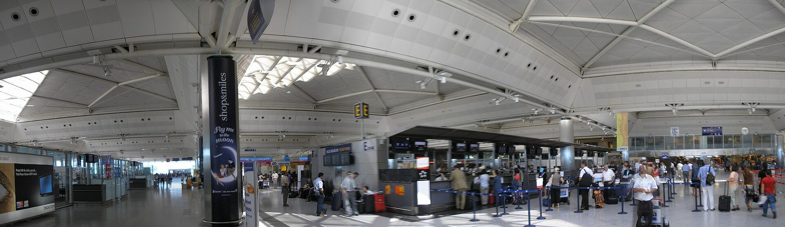

Mayıs 2013 · ihale
Atatürk sıkışmıştı
Atatürk Havalimanı şehrin içinde kalmıştı: iki kesişen pist, büyüyecek yer yok. Mayıs 2013'te Cengiz–Kolin–Limak–Mapa–Kalyon ortak girişimi yeni havalimanı ihalesini kazandı. Model yap-işlet-devret: şirket inşa eder, 25 yıl işletir, sonra devlete devreder.
Yatırım bedeli 10,2 milyar euro; üstüne 25 yıl boyunca devlete ödenecek 22,2 milyar euro kira. Dünyanın en büyük özel havalimanı işletmesi.